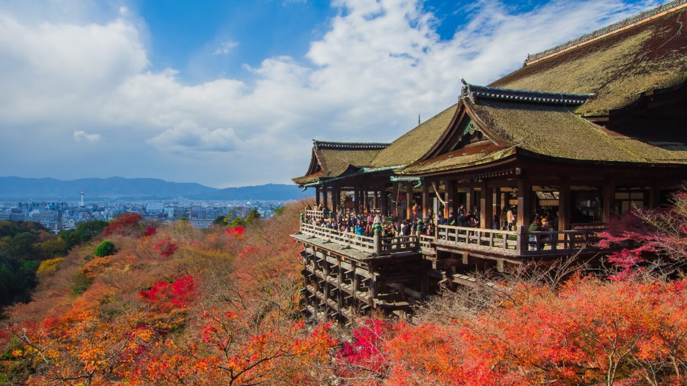
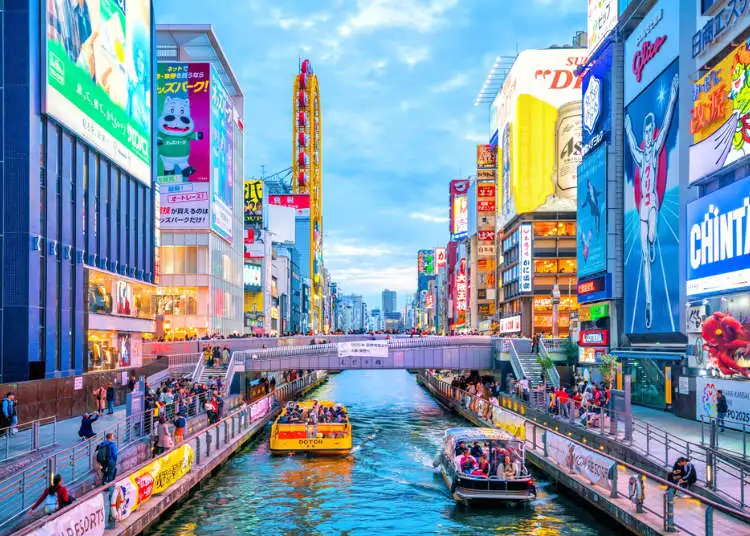
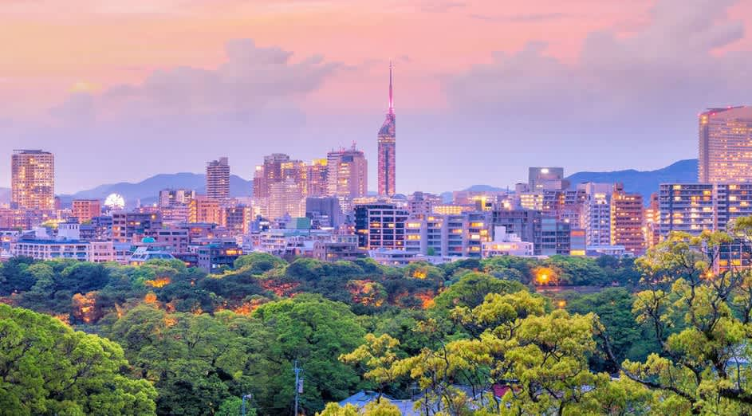
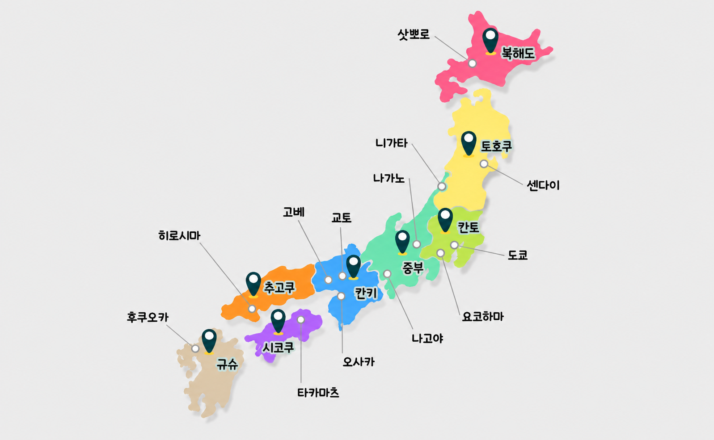
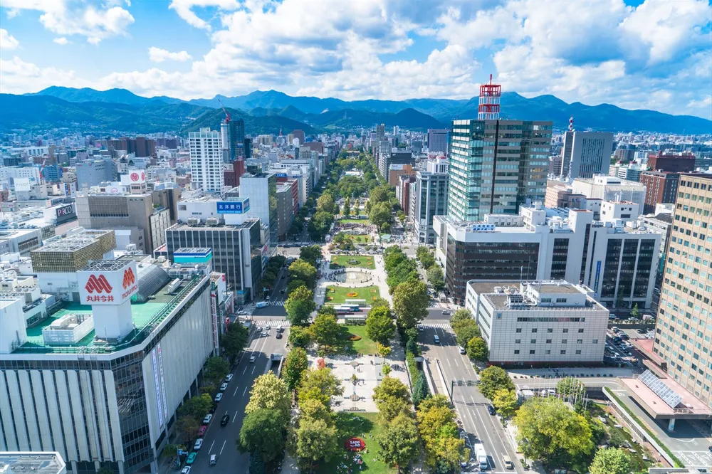

일본지도

교토
천년의 세월을 담은 고즈넉한 사찰과 전통 가옥 거리로 가장 일본스러운 정취를 품은 곳입니다.

오사카
활기찬 에너지와 유쾌한 상인 정신, 맛있는 길거리 음식이 가득한 미식 도시입니다.

후쿠오카
한국에서 가장 가깝고 공항 접근성이 좋아 부담 없이 먹방을 즐기기 좋은 힐링 도시입니다.


삿포로
겨울의 낭만적인 눈 풍경과 시원한 맥주, 싱싱한 해산물이 매력적인 북방의 천국입니다.

도쿄
화려한 빌딩 숲과 첨단 트렌드, 전통이 공존하는 일본의 역동적인 수도입니다.